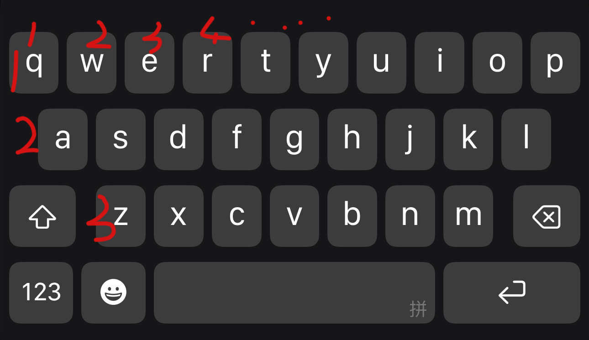

备忘录
⋯
2024年12月6日 14:32
前几天把手机摔坏了😓
闺蜜
给我推了一个微信插件，下载后可以在本地备份聊天记录，以前部分丢失的也回来了，如果找不到记录的话，用上面的工具搜一下就可以了
私密空间
2025年04月06日 18:05
毕竟存了我从小到大吐苦水的内容，密码我设的难了一点，不过一打字就能知道解法了，以我的名字全文及生日的日期组成，哈哈，也不难嘛

💡 提示词：
y = 16
24 = f
棒🎉
生活小妙招
2025年12月07日 09:15
从男朋友那里学来的，搜索一个重名多的人，可以尝试搜索
"名字+职业+地区"
的方式。
例：李华 外科医生 江州市
嘿嘿，管用 👍